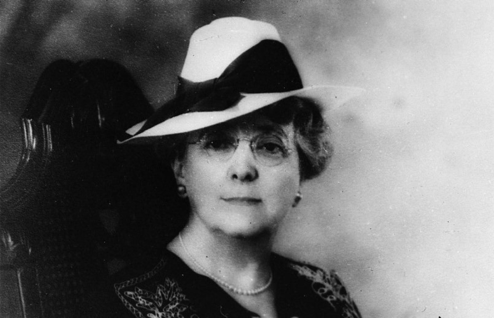

Lucy Maud Montgomery (1874-1942) wrote books like Anne of Green Gables and
Emily of the New Moon.
Here's a time line of Lucy Maud Montgomery's life:
- November 30, 1874: Born in Clifton (now New London) in Prince Edward Island.
- 1890: Moved to Prince Albert and published her first work, a poem titled "On Cape LeForce" in the Charlottetown paper, The Daily Patriot.
- 1891: Returned to Prince Edward Island.
- 1893: Attended Prince of Wales College in Charlottetown to obtain a teacher's license.
- 1895 - 1896: Studied literature at Dalhousie University in Halifax, Nova Scotia.
- 1897: Her short stories were published in magazines and newspapers.
- 1908: Published her first book, Anne of Green Gables.
- 1911: Married Ewen Macdonald (1870–1943), a Presbyterian minister.
- 1920: Was infuriated with the 1919 film version of Anne of Green Gables for changing Anne from a Canadian to an American.
- 1921: Started writing what became the novel Emily of New Moon.
- 1941: Completed what intended to be a 9th Anne book, The Blythes Are Quoted, which was published only in 2009.
- April 24, 1942: Was found dead in her bed in her Toronto home.
"That's the worst of growing up, and I'm beginning to realize it. The things you wanted so much when you were a child don't seem half so wonderful to you when you get them."
-- Lucy Maud Montgomery, Anne of Green Gables